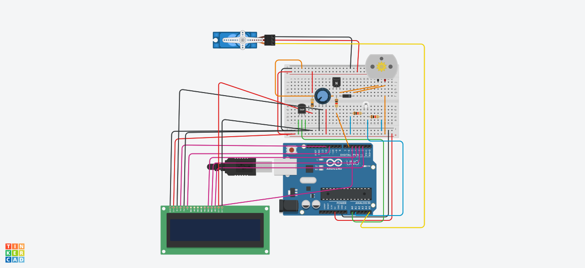
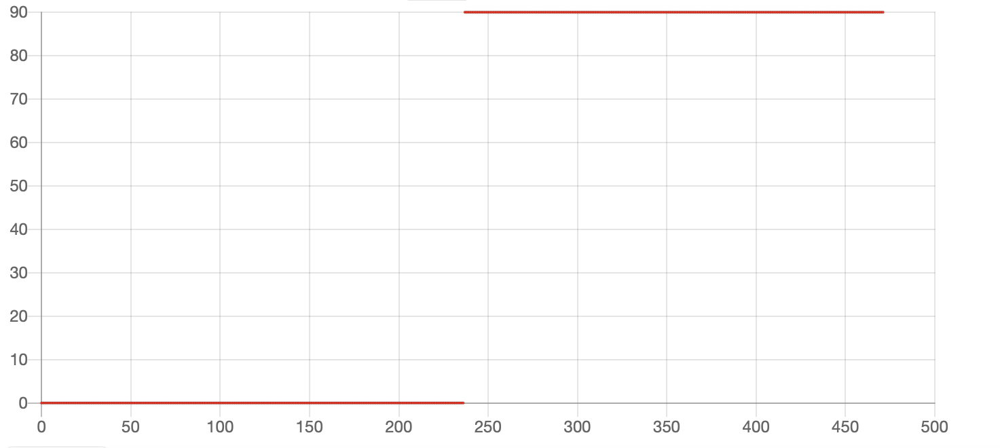
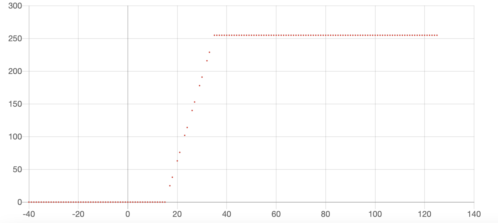

Smart Vendilation System Project
Planetek On-Board Academy, 27-29 May 2022
Team O.M.G
This project is about creating an arduino integrated solution that simulates a smart ventilation system. The proposed solution can be seen on the figure below:

The code of the project along with the simulated results can be found here.
The aim of this proposed solution is:
- To be able to control the speed of a DC motor, simulating a system of ventilation of fans, using temperature readings from the environment.
- To be able to control the position of a verso motor, simulating a system of window shutters, using light luminosity readings from the environment.
- This will depend on a set of desired values for the temperature and light luminosity, depending on the given circumstances.
The following graphs are presented:
A graph of the position of the window of the verso motor versus the ambient light luminosity:

and a graph of the speed of the dc motor versus the ambient temperature:

The graphs show that our solution has exactly the desired behavior and is able to control the speed of the dc motor and the position of the servo motor according to the temperature and light luminosity readings from our sensors.